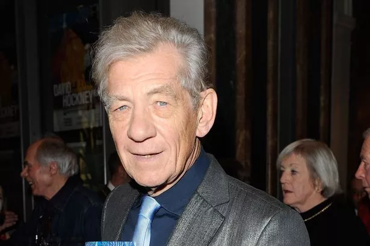

by Savvyscoop | March 2, 2024 | Savvyscoop News
Actor Ian finds himself at the center of a highly publicized divorce battle with his estranged wife, as the couple grapples with the complexities of dissolving their marriage while navigating the intricacies of child support arrangements. Recent developments in the divorce proceedings shed light on the challenges facing Ian and his ex-wife as they seek to untangle their lives and move forward separately. Central to the dispute are discussions surrounding the division of assets, spousal support, and, most significantly, the allocation of child support for their shared child
Sources close to the situation revealed that Ian's actions came to light when fans began sharing their interactions with the actor on social media platforms. According to the terms of his contract, Ian is prohibited from engaging with fans independently, a condition put in place to maintain control over his public image and ensure that all communications align with his professional commitments.
Sources close to the couple reveal that negotiations have been fraught with tension, as both parties strive to secure favorable terms that align with their respective interests. While Ian remains committed to providing financial support for their child, disagreements over the specific details of the child support arrangement have led to prolonged discussions and delays in reaching a resolution. The protracted nature of the divorce proceedings has not only taken a toll on Ian's personal life but has also had implications for his career in the entertainment industry. With financial resources tied up in legal fees and the divorce settlement, Ian's ability to pursue new projects and capitalize on career opportunities has been hindered, prompting concerns about the long-term impact on his professional trajectory.
Despite the challenges he faces on both personal and professional fronts, Ian remains steadfast in his determination to navigate the divorce proceedings with integrity and prioritize the well-being of his child above all else. Friends and colleagues commend Ian for his resilience in the face of adversity, noting his unwavering commitment to finding a resolution that serves the best interests of all parties involved. As Ian and his ex-wife continue to work towards finalizing their divorce settlement and establishing a mutually agreeable child support arrangement, the actor remains hopeful that the resolution of these legal matters will pave the way for a new chapter in his life, one defined by healing, growth, and renewed focus on his career aspirations.